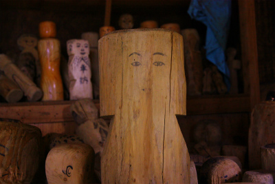

最上地方の山の神/山形県
山の神とは何か？
…コレを説明し出すと超長くなってしまうのでここではバッサリ割愛させてもらいますよ。
要は文字通り山の神様と認識いただければ結構。
農耕期には山から下りてきて田の神に変身して収穫後はまた山に戻ってく、と信じられている地域も多い。
国土の大半が山地である日本において全国にいらっしゃるありがたーい神様であるぞよ。
ただ、ほとんどの地域で山の神は偶像化されていない場合が多い。
「山の神」と刻まれた石碑だけが建っているケースがほとんどだと思う。
ところが。
そんな控えめな神様なのに、山形県の最上地方ではどうも大変なことになっているらしい。
場所は最上地方の北部、新庄市〜金山町〜真室川町、鮭川村周辺。その地域には大量の山の神の像があるという。
しかもかなりユニークなカタチの神様だという。
コレは見にいかねば、というわけで山形県最上地方にGO！
…というわけで新庄市にやってまいりましたよ。
新庄市の中心部から徐々に北へ北へと山の神を祀っている神社を中心にリサーチを進めていくことにする。
新庄の市街地近くにもそれらしき神社は存在するが、神像は見当たらない。
それらしき神像とのファーストコンタクトは新庄市北部にある黒沢という集落の山神社であった。
小さな神社で、社殿の中にはたくさんの木像が積まれていた。その数は数十体といったところだろうか。
ただし鍵がかかっており、中は暗く詳細は一切判らず仕舞。
いきなり出鼻をくじかれる格好になってしまい非常に残念である。この先、山の神と出会えるのだろうか？
若干の不安を胸に抱きつつ次に向かったのは仁田山の神社。
神社は三叉路の近くに位置している。
山の神が祀られるのは本殿からやや離れた小高い山中。
訪問時は大地震からまだ間もない頃で、燈篭の笠が参道に落ちていた。
時期的に行く先々でどうしても震災の話になったが、この地域は深刻な被害はあまり多くなかったようだ。
比較的最近出来た社殿なのだろう。壁や柱が新しい。何よりコンクリートの基礎部分が新しい。
昔のものを使っているのだろう、「山ノ神」という額だけが古めかしかった。
中を覗かせてもらうとシンプルな室内に山の神が祀られている。
山の神像は２体あり、何故か綿で包まれていた。
山の神は女性の神様なのだ、とする地域は多い。実際妻のことを山の神と称したりするのはその為だ。
山の神を信仰する人はあえて醜いオコゼを奉納し、優越感を刺激するという涙ぐましい努力をして山の神の機嫌をとるのだとか。
ところで女性の神様を真綿で包むという習俗はここだけではない。
例えば以前、奪衣婆愛好家でもある中野純さんから聞いた話だが、奪衣婆を真綿で包む祭りは多いそうである。
女神と真綿の関係は他でも散見しているようだが、ケースが少ないので今の時点では断言できないが、決して無関係ではないような予見だけをここではプンプンと匂わせておきましょうか。
…というわけでこの時点で新庄市のほぼ最北端、事前のリサーチによる山の神像の真相には中々肉薄できないでいた。
ところがこれから様相が一変。次から次へとオリジナリティあふれる山の神が登場するのだ！
まずは新庄市の赤坂にある山神神社。
鳥居には山神とある。
水田に囲まれた山神神社も珍しいが、先に述べたように山の神は田の神に転じるため農耕神でもあるのだ。
従って田んぼの中にあっても不自然ではないのだろう。
小さな社殿の扉を開けさせていただきますよ…
っと、いきなり現れました。山の神軍団！
その数は200体近くはあろうか。

中央にある石像には綿のような麻紐のようなものが掛けられていた。これもまた先ほどの仁田山の山の神と同様、女性的な姿をしていた
大量に積み重ねられた木の像、コレ全部山の神の神像なのである。
基本的なスタイルは厚み2〜3cmの木の板を削り、ヒトガタを作り、顔や着物を描いたシンプルなもの。

着物を着ているものが多いが、そうでないものも。
最上地方では山の神勧進という行事がある。
各地域の１５歳以下の男の子が山の神の神像を持って各家庭を回り、米や賽銭、菓子などを貰ってまわるのである。
勧進の日は子供達だけで夜を明かすという。
この祭りの際、子供達の中で最年長は「一番大将」と呼ばれ、行事の一切を取り仕切ることになる。
一番になった子供はその記念に自ら神像を作り、奉納するのだという。
つまりこのたくさんの神像は山の神勧進行事の産物であり、コレまでの歴代の一番大将の作ったもの、ということになるのだろう。
技術的にはアレだが中学生が神妙に木を削っている姿を想像すると微笑ましくもなる。
素晴らしい山の神の群像であった。
ただしお堂の隅にたくさんのゴキちゃんがウロチョロしていたのが恐かったです…
さらに奥州街道を北上し、金山町に入る。
林業が盛んな町である。
林業の盛んなお土地柄→という事は山への畏怖の念も強いのでは→という事は山の神信仰が盛んなのでは→という事は素敵な山の神がザックザクなのでは…
という御都合主義的三段論法により期待値はあがりまくり。
で、山崎地区の愛宕山の麓にある白山神社。
周りを杉林に囲まれ神秘的な雰囲気が漂う。まさに山の神が鎮座するにふさわしいロケーションだ。
階段を上ると白山堂という額の架かったお堂がある。
そ〜っと中を覗いてみる…オジャマシマス…
はうっっっっ！
コレは凄い！
堂内の右半分に大量の神像が並んでいるぞ。
先ほどの赤坂の山の神に比べると手のないこけしのような形の像が多い。
先ほどの赤坂では四角い板から作っていたが、ここの山の神は円柱や角柱状の木材から成形している。
中にはこけしにしか見えない像もちらほら。つか棚にあるツヤツヤしてるのはモロこけしでしょ。
山の神は一番大将の奉納だけではなく、男子を授かった親や厄年の人なども奉納するのだという。
このツヤツヤしているこけし状の像は大人の作なのだろう。
この最上地方はこけしの有名産地である肘折温泉や鳴子温泉も程近い。この地にもこけし職人がいるのかも知れない。
この方↓とかシュールすぎて恐いんですけど…。

こちらは子供作、だと思う。作りはシンプルだが、角を丸めたり、表面を磨いたり、それなりの手間は掛けている。
こちらは手足をキッチリ作りこんだ力作。二足で立っている。ただし周辺の神様があまりのもシンプルなので逆に浮いていた。
それぞれに味わい深い神様達である。

棚の上には２体の神像が箱に入って祀られている。２体とも女性の石像であった。
恐らく山の神勧進の際はこの神像を担いで各戸を回るのだろう。
堂内は薄暗く実際はこんな。
真ん中から垂れ下がっているねじりんぼうのようなモノ（あ〜っ、名前を忘れた！）だけがカラフルで艶めかしい。
千羽鶴に混じって小さなお手玉が大量に連なっている奉納物があった。これは作るの大変だったのでは。
ねじれた木を使った蜀台がいくつも並んでいて、不気味な存在感を発揮していた。
お次はグッと北上して最上地方のほぼ最北部、真室川町の中の股。
ここでも山の神勧進行事が行われているのだというが、肝心の神社が見つからない。
やっと見つけたが、もしかしたらこれは手前の集落の山の神神社かも知れない。
鳥居は立派だが、その先の道は完全に草で覆われていた。
本当にこの先に神社などあるのだろうか？
半信半疑で登ってみると小さな祠がトタン屋根で覆われていた。
地震の所為か山の神の神像が祠から飛び出して地面に転がっていた。
この地域の山の神はコレまで見てきた山の神とはやや趣が違う。
尖った頭、飛行機のような体…。ここに奉納されている神像は数こそ少ないもののみな同じ形式で作られていた。
これをどう見るか。
思い思いの神像を奉納していたのが洗練されてパターン化したのか？
それとも逆に元々パターン化していたものが何らかの理由で多様化して様々な形の神像が生まれたのか？
うむ〜。
答えなど出るはずもなく、とりあえず神様を元に戻しておきましたよ。
さて、再び金山町に戻り下中田という地区に向かう。
八幡神社という鳥居があったので寄ってみたが、本殿は火災があったのだろうか、無くなっていた。
そんな神社の片隅に小さな小屋があった。
開けてみると…
おおお、ここにも山の神がたくさん！
ここも先ほどの中の股の山の神と同じく厚みのある板をベースに作った飛行機のような形の神像であった。
中央には一際大きい神像がある。その左にはマサカリを持った山の神が座っている。
髪は長く髭をたくわえ、恰幅のよい姿はいかにも山の神らしい姿だ。このようなタイプの山の神を見たのはここだけだった。
手前の方には比較的新しい山の神の神像が置かれている。
頭上の尖った部分は烏帽子だったのね。
おお、飛行機みたいなシルエットは紋付袴姿だったのか。
紋付袴に烏帽子のお三方。

文句なしに今回のベストドレッサーであった。
子供が少なくなっている昨今、このような行事を継続する事自体非常に難しいのは想像に難くない。
しかしメイドイン子供の神様なんてチョット他ではお目にかかれないので、何とかこの素敵な習俗は続けてもらいたい。
そう願いながら最上を後にするのであった。
2011.06.
参考文献
山形県最上地方の民俗文化と地域社会 山形県教育委員会
山形県最上地方における山の神勧進とサンゲサンゲ行事について 大友義助
山の神と男子成長祈願 東北学１０号
山形県北部の山の神祭り考 東北芸術工科大学東北文化研究センター研究紀要第一号
など
珍寺大道場 HOME